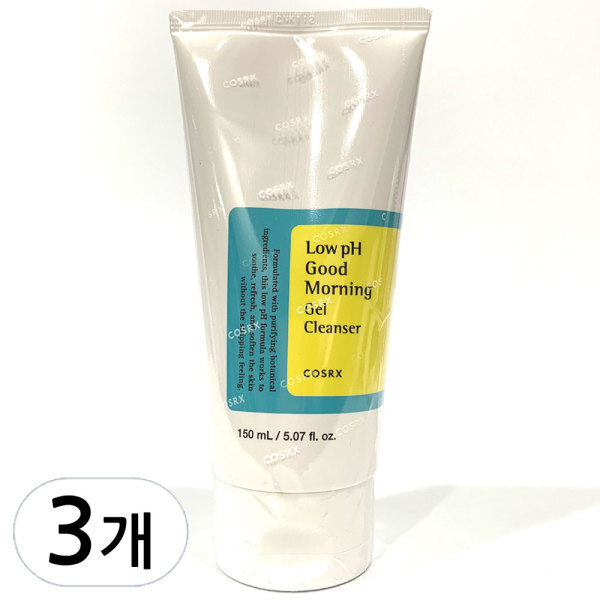
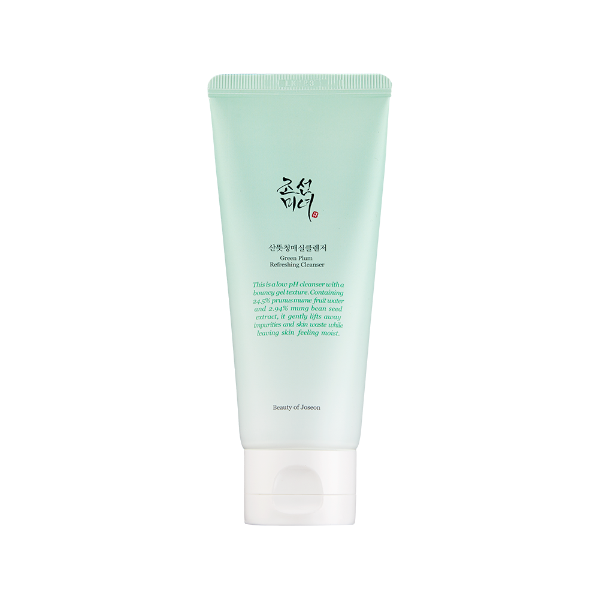
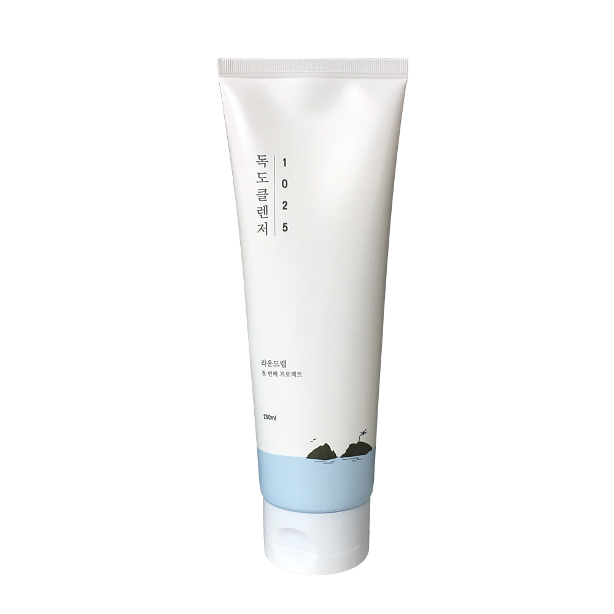
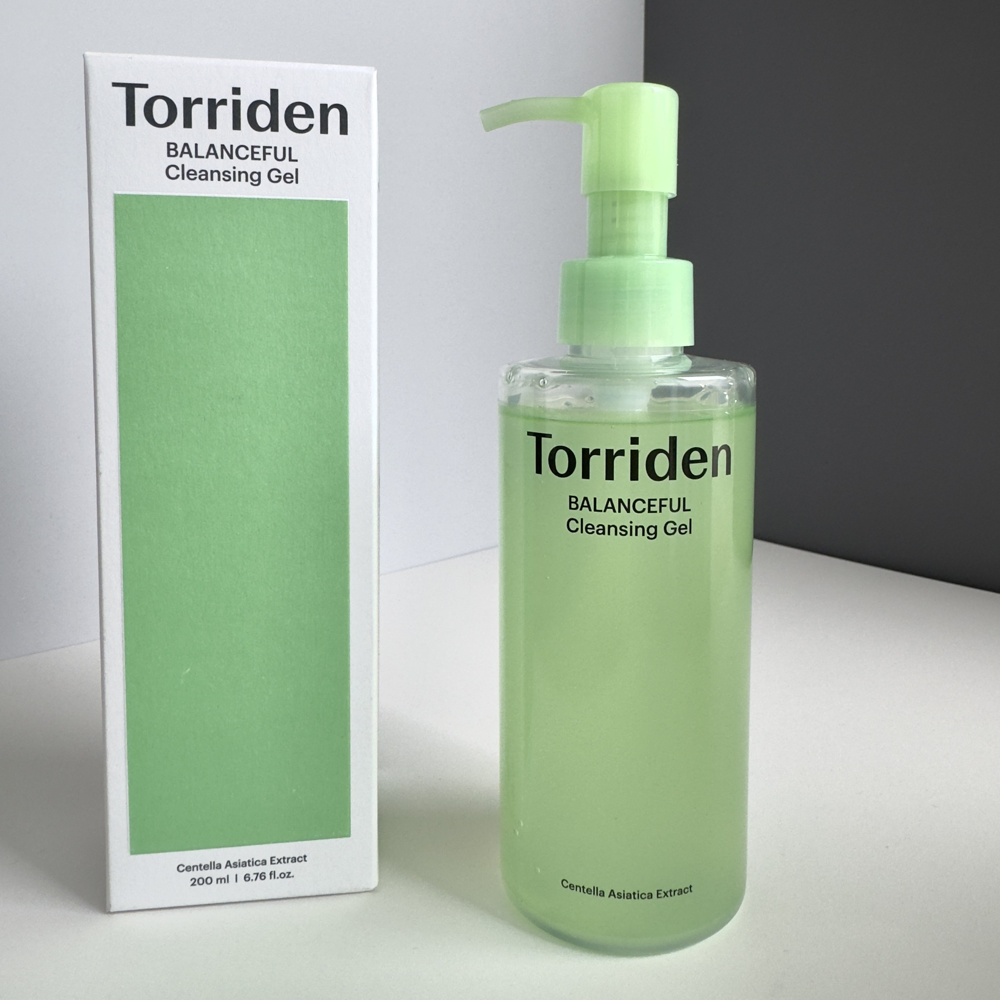

Home › Korean Cleanser
6 Best Korean Cleansers for Glass Skin (2026)
The Korean cleansers that never strip
I rounded up 6 Korean cleanser worth knowing — the ones K-beauty fans keep coming back to. Real products, honest notes, and roughly what they cost. Prices are approximate; check the retailer for today's price.

Low pH Good Morning Gel Cleanser
Gentle low-pH gel cleanser for daily use.
≈ $13.0 (approx) · Ships worldwide
Check price on Amazon →
Green Plum Refreshing Cleanser
Mildly exfoliating gel that never strips.
≈ $14.0 (approx) · Ships worldwide
Check price on Amazon →
Heartleaf Quercetinol Pore Deep Cleansing Foam
Deep-cleansing foam that stays gentle.
≈ $16.0 (approx) · Ships worldwide
Check price on Amazon →
1025 Dokdo Cleanser
Creamy low-pH cleanser for soft skin.
≈ $16.0 (approx) · Ships worldwide
Check price on Amazon →
AHA BHA PHA 30 Days Miracle Cleanser
Exfoliating cleanser for congested skin.
≈ $15.0 (approx) · Ships worldwide
Check price on Amazon →
Balanceful Cica Cleansing Foam
Soothing cica foam for a calm finish.
≈ $14.0 (approx) · Ships worldwide
Check price on Amazon →Save this for your next K-beauty haul
Prices are approximate and pulled from public shopping data; always check the retailer for the current price and shade/size before buying.